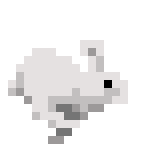

Nael
Année: 2025
L'informatique est un domaine qui me passionne depuis le début du collège à peu près (un peu avant même). J'ai commencé avec Scratch en cours de math puis je me suis intéressé à Python. Au début ce que je souhaitais c'était de faire des jeux vidéos mais par la suite, je me suis tourné vers les sites et j'ai appris le HTML et CSS. En seconde, nous devions faire un stage en fin d'année. Mon entourage m'a de ce fait recommandé Syselio. En jetant un oeil à leur site, j'ai découvert ce qu'ils faisaient et j'ai tout de suite été intéressé et c'est donc là-bas que j'ai postulé pour mon stage. Durant ce stage, j'ai eu l'occasion de découvrir de manière plus approfondie le métier de développeur. J'ai découvert des différents parcours et le quotidien d'un développeur. J'ai aussi eu l'opportunité de créer un site (celui-ci) avec un autre stagiaire, Rayan. Cette expérience m'aura beaucoup enrichi et m'aura apporté plus d'éléments pour m'aider à m'orienter dans le futur et pour cela, je remercie Syselio.